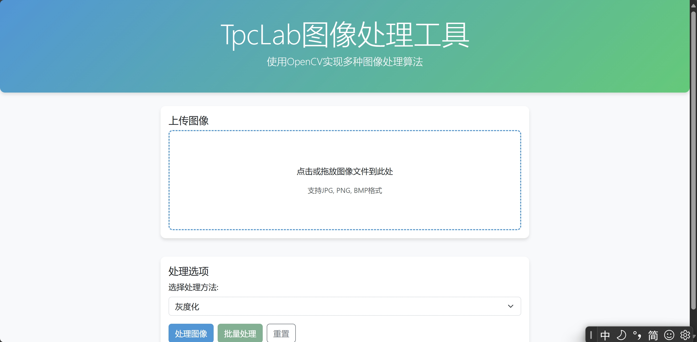
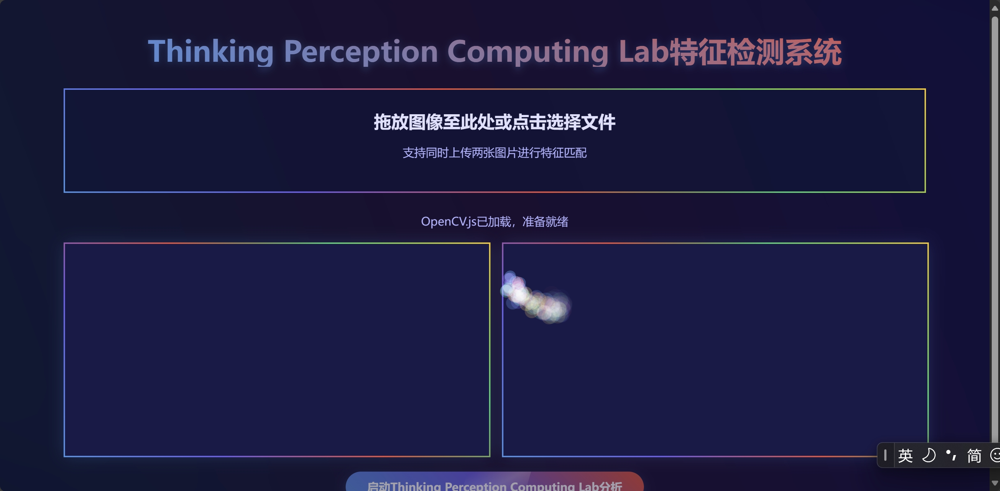
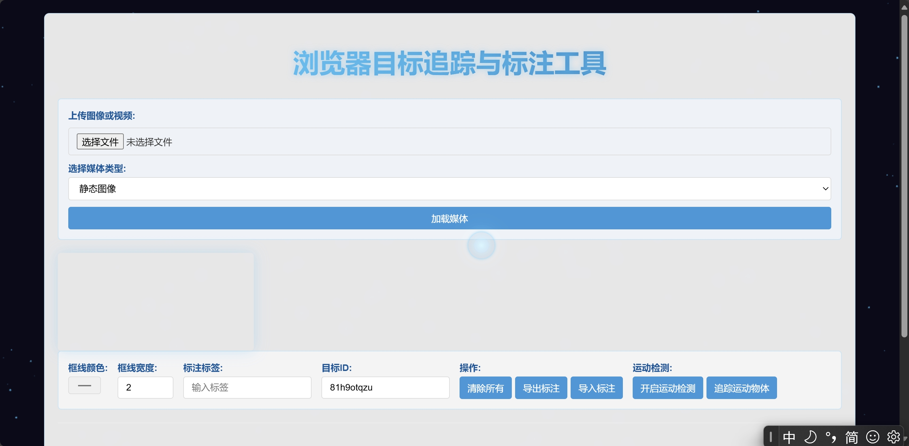
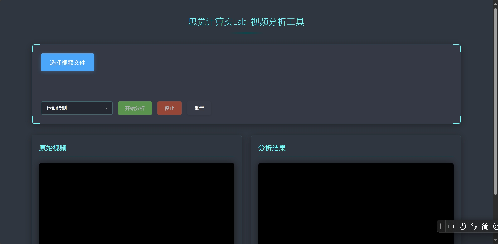

图片处理
欢迎使用图片处理工具！我们的图片处理工具可以通过opencv.js对相关图片继续灰度、二值化处理等
在使用 OpenCV.js 处理图像时，首先要在 HTML 中引入该库并编写加载检测函数。之后创建canvas元素，将图像绘制到canvas上，利用cv.imread()读取图像，再用cv.imshow()显示图像，处理完后使用delete()释放内存。
具体处理操作包括颜色空间转换（如从 BGR 转换为 RGB、转换为灰度图）、调整大小、翻转等图像转换操作；对比度增强、直方图均衡化、锐化、中值滤波、高斯滤波等图像增强和噪声处理操作；以及阈值分割、区域生长、聚类、轮廓提取（包含查找轮廓、绘制轮廓、多边形拟合）等图像分割和轮廓提取操作。处理完成后可将结果绘制回canvas展示，同时注意使用完Mat对象后释放内存以防止内存泄漏。

查看详情 →特征检测
该系统利用 OpenCV.js 实现图像特征检测。在 OpenCV.js 加载完成后，用户可通过拖放或点击选择文件的方式上传图片，系统会将上传的图片加载到Image对象，然后用户可以对相关图像进行操作
调整画布大小并绘制到对应的canvas上。点击 “启动思觉计算实 Lab 分析” 按钮后，系统将图片转换为 OpenCV 的Mat对象，利用cv.cvtColor将图像从 RGBA 转换为 RGB，再通过cv.cvtColor将其转换为灰度图，接着使用cv.cornerHarris进行 Harris 角点检测，根据阈值筛选出特征点。简单特征匹配时，取前 N 个点（最多 100 个）进行匹配。绘制特征点时，先清除并重新绘制图像，创建渐变颜色后在图像对应位置绘制特征点。

查看详情 →目标追踪
该网页是一个具有图像和视频处理功能的交互平台。网页背景有星空特效，鼠标指针具有动态效果，增强视觉体验。用户能通过文件选择或调用摄像头上传图像、视频，上传后可在画布展示内容。
在交互操作上，用户能在画布绘制矩形框标注，标注信息包括颜色、宽度、标签和 ID ，绘制完成后相关标注信息会展示在页面，且支持删除单个标注；还能导出标注数据为 JSON 文件，或导入已有标注数据文件。此外，网页具备运动检测功能，开启后能对比视频帧检测运动，若运动像素超过一定比例，会在画布标记运动区域；

查看详情 →视频分析
“思觉计算实 Lab - 视频分析工具” 的视频处理平台，为用户提供视频上传、多种分析功能及结果展示等服务。
用户能通过 “选择视频文件” 按钮上传视频，上传成功后视频会在预览窗口和原始视频区域展示，同时可启用 “开始分析” 按钮。分析功能包括运动检测、颜色追踪和边缘检测，用户在下拉菜单选择相应功能后点击 “开始分析” 即可执行。运动检测通过对比相邻帧像素 RGB 值差异实现，若差异超阈值则标记为运动；颜色追踪借助 Tracking.js 库，可对指定颜色（如洋红色、青色、黄色）进行追踪并在检测区域绘制边框和坐标；边缘检测运用 Sobel 算子将视频转换为灰度图后计算梯度幅度，超过阈值则认定为边缘。处理过程中，“停止” 按钮可暂停分析，“重置” 按钮能清除所有处理结果、重置视频和界面状态。

查看详情 →